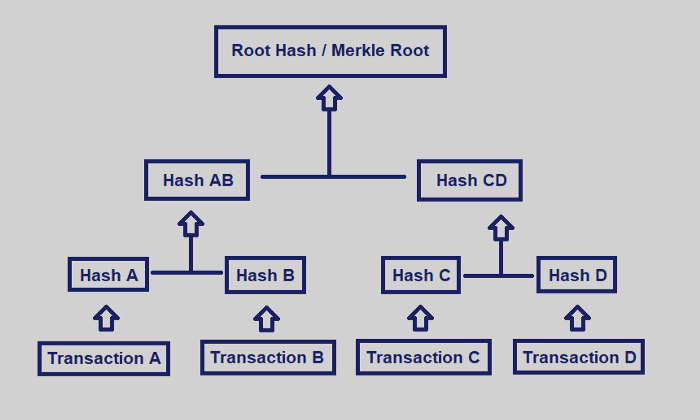
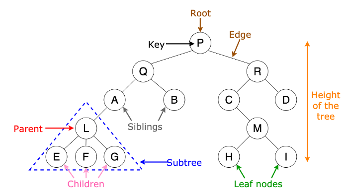

How does the blockchain work? (Part 2)

Trees
Before looking at Merkle trees, let’s see what a tree actually is when it comes to programming. In simple terms, trees are nothing but representations of how data is stored in the memory.


When you look at the above picture you’ll see some of the terms we use while defining trees. P is the root node. Root node is the node which is present at the topmost part of the tree. Keys are the values stored inside each of the nodes. Edges are the connection between one node and the other. Parent nodes(R is the parent of C and D)are nodes which have a branch from one node to the another and the child nodes(A and B are the child nodes of Q) are the nodes connected to the parent nodes. The children of the same parent node are called sibling nodes(E, F, G and A, B and C, D and H, I and Q, R are all siblings respectively). And the nodes with no children are called leaf nodes(H, I, D, and B are all leaf nodes). Now the number of edges between a node and the root node is called the depth of the node. For example, let’s take the node ‘A’. A is connected to Q and Q is connected to P(root node). There are two edges between A and P. Therefore the depth of A is 2. Note that the depth of the root node is 0. Level of a node is nothing but depth of the node + 1. Which means the level of A is 3.
Whew, that was a lot of definitions. The good news is you don’t have to try hard and remember any of those. Once you have compared the definitions to the picture of the tree above, you can easily understand what they mean. And then the next time you see a tree, you can easily understand them in a glance.
So after knowing the terms used in building trees, we can say that a tree is nothing but a collection of nodes.
Merkle Trees
Ok, as you are now familiar with trees let’s get to business. What are these Merkle trees? Merkle trees are a fundamental part of blockchain technology. One of the main reasons why blockchain is super famous is because of the security and efficient storage of data. Merkle trees are used to achieve this. It helps in efficient and secure verification of content in a large body of data.
If you forgot what hashing means, quickly go to my previous article and read up on it and come back. It’ll only take you a few minutes and will help you understand what I’m going to tell you next better.
In a Merkle tree, each leaf node is a hash of a block of data, and each parent node is a hash of its children. Yeah, that’s it. It’s that simple. Also to make things more simpler, Merkle trees usually have a branching factor of 2. Don’t frown, my friend, it just means that each node has children. Merkle trees are created by repeatedly hashing pairs of nodes until there is only one hash left (this hash is called the Root Hash, or the Merkle Root). They are constructed from the bottom up, from hashes of individual transactions. The Merkle Root summarizes all of the data in the related transactions and is stored in the block header (a block header is the unique identity of a particular block on a blockchain and is hashed by miners for rewards). It maintains the integrity of the data. If a single detail in any of the transactions or the order of the transactions changes, so does the Merkle Root. Using a Merkle tree allows for a quick and simple test of whether a specific transaction is included in the set or not.
Merkle trees are powerful and indispensable tools for miners and users on the blockchain. They are extremely robust and are at the heart of several peer-to-peer networks such as BitTorrent, Git, Bitcoin, and Ethereum.